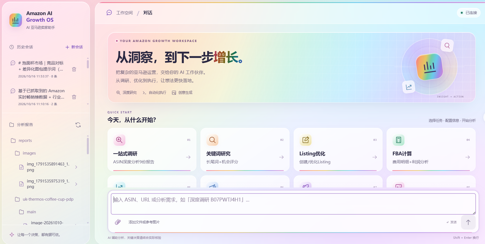
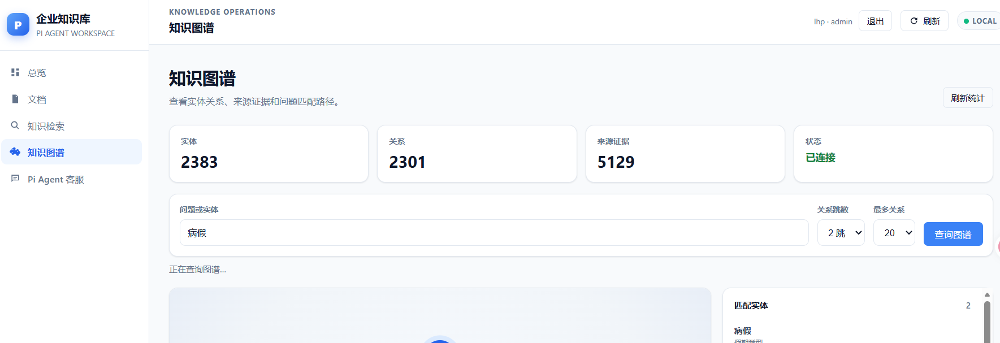
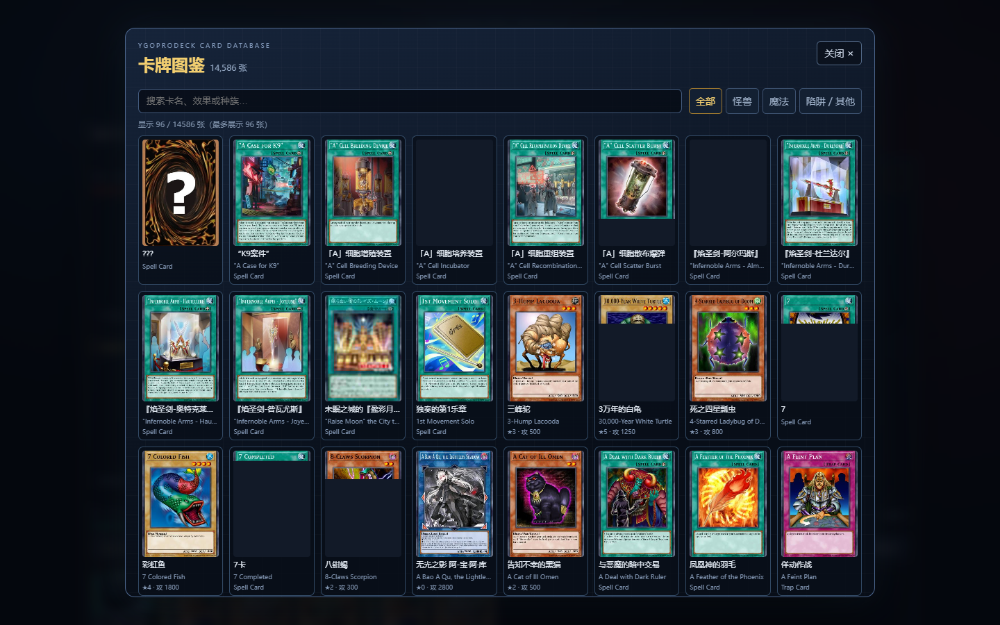
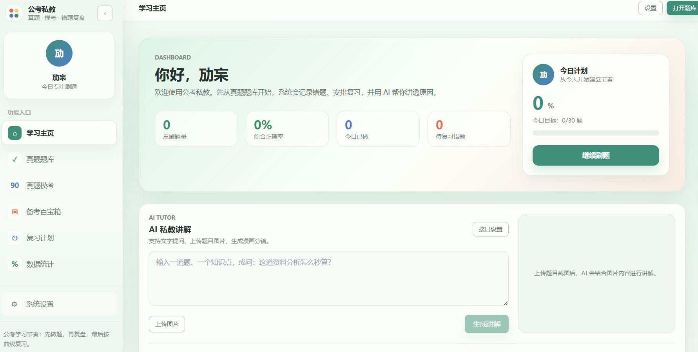
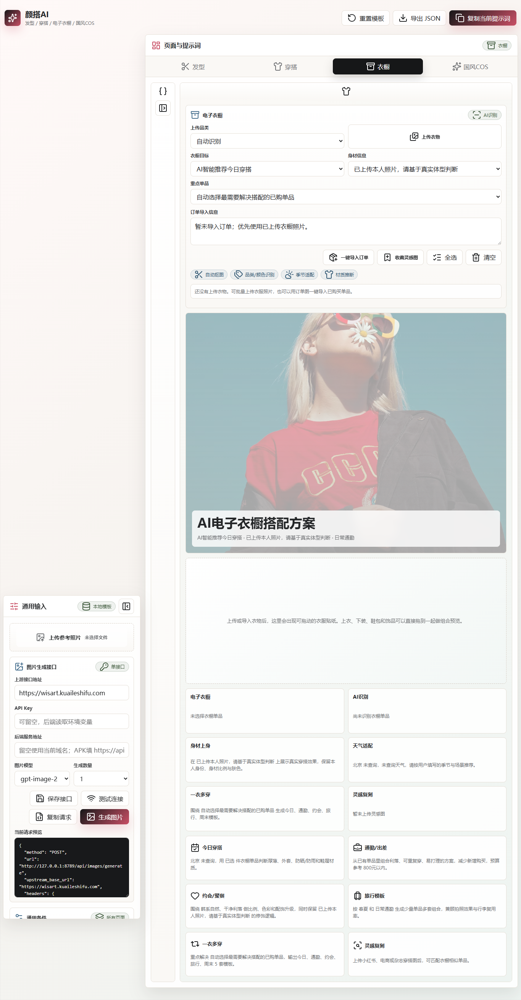
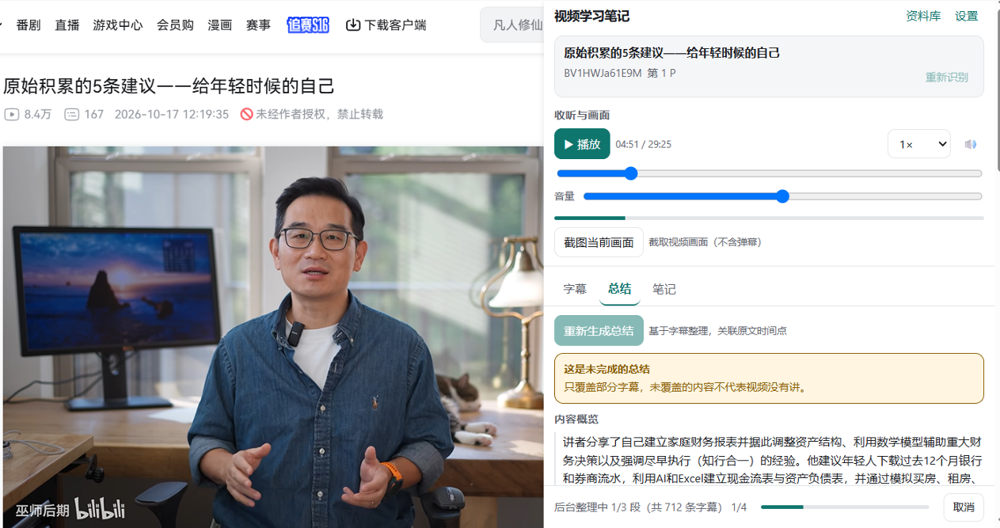

01 / BUILD
8
个 AI 开源项目
02 / LEAD
200+
人团队管理规模
03 / IMPROVE
15%
流程降本
04 / SHARE
60
篇宣传稿产出
SELECTED WORK8 个现有开源项目
My Projects
从真实工作流，到日常生活的灵感。
发布日期与 Star 数据未提供，暂不展示。
综合管理工作台 comprehensive-workbench
Enterprise AI Workspace：人事、办公、党建三大管理模块 + 待办中心 + AI 助手，综合事务一站式处理
痛点综合管理事务碎、跨条线：请假审批、花名册、公章登记、公务接待、党费缴纳分散处理，重复劳动多
做法Vue 自建工作台：工作台首页 + 待办中心统一收口；人事管理（人员花名册、员工制作）、办公管理（通知公告、公章使用登记、公务接待）、党建管理（党员名册、党费季度缴纳）三大模块；内置请假等审批流（待审、已批、驳回全状态流转）；AI 助手接入大模型做智能起草与问答
结果高频事务一站式办理、审批线上留痕；既是开发者也是第一用户，每天拿真实综合管理工作当测试集，已开源
我的角色独立完成需求调研、原型与数据表设计、Vue 前后端开发、审批流实现与部署上线；本人即第一用户，拿日常工作当验收测试
踩坑与解决早期审批状态散在各页面、经常不同步，把状态收口成统一流转（待审、已批、驳回），列表全部从同一接口取数，前端只做展示，不同步问题彻底消除

Amazon AI Growth OS，项目截图Amazon AI Growth OS amazon-ai-growth-os
面向亚马逊卖家的 AI 增长操作系统，Multi-Agent 串联选品到增长的全链路
痛点卖家从选品、竞品、评论到 Listing、广告全流程割裂，缺一体化智能工具
做法Supervisor 调度 9 个专家 Agent 串起六阶段顺序流水线（选品、竞品、VOC、Listing、广告、增长看板），状态逐级传递；FastAPI 后端 + 零构建前端 + 模块化 MCP 工具层（Bright Data、Sorftime、Sif 可插拔替换）；Listing 生成与视觉工厂解耦，蓝海选品自动过滤书籍影视类目
结果一句话自然语言即调度 56 个亚马逊领域专业技能，覆盖选品、关键词、Listing、FBA/广告、自动上架，基于 Claude Agent SDK 的对话式全链路助手
我的角色独立设计 Supervisor + 9 Agent 架构与阶段间状态传递协议，开发 FastAPI 后端与零构建前端，规划并接入 MCP 工具链（Bright Data、Sorftime、Sif）
踩坑与解决多 Agent 早期各说各话：上游输出格式不固定，下游解析频繁失败，定了阶段间统一 schema 契约，每个 Agent 只对自己阶段的产出负责；抓取源不稳定，做成可插拔 MCP 工具层，哪个源稳用哪个

企业知识库 enterprise-knowledge-graph-rag
企业知识库 + 知识图谱 RAG：向量与图谱双路混合召回，答案可溯源
痛点企业文档散落各处，纯向量检索答不准关系型问题，答案也无法溯源到原文依据
做法FastAPI + Chroma + SQLite 三层：上传 PDF、Markdown、TXT 自动解析、分块并建立语义索引（DashScope embedding）；大模型按 JSON 契约抽实体、关系存入图谱，每条关系保留原始 chunk、来源文件与页码证据；客服同时召回向量片段与图谱关系，冲突时以原文为准；原生 SVG 画 1–3 跳关系路径，附图谱诊断接口
结果答案带引用编号、来源位置与检索模式；管理员、编辑、查看者三级 RBAC + 会话认证 + 审计日志，AI 服务不可用时检索不受影响，已开源
我的角色独立设计三层架构（FastAPI 边界、Chroma 检索、SQLite 图谱存储），编写图谱抽取的 JSON 契约与提示词，实现 RBAC、审计日志与原生 SVG 可视化
踩坑与解决大模型抽实体关系时输出不稳定、字段时缺时错，定严格 JSON 契约 + 校验重试，不合格直接丢弃；图谱与原文偶尔冲突，立了以原文为准的仲裁规则，答案永远可回溯

命运对决 destiny-duel
新手友好的类游戏王卡牌对战：boardgame.io + React 人机对战，14,586 张中文卡牌图鉴（97.6% 官方译名覆盖）
痛点现有对战工具偏硬核：英文界面、规则复杂、新手劝退，也没有能离线练手的中文人机环境
做法boardgame.io 实现完整规则（祭品召唤、战斗判定、死者苏生、护封剑）+ 脚本 AI 人机对战 + React 深色决斗场 UI + Web Audio 合成音效（零素材）；对接 YGOPRODeck 与百鸽 ygocdb 双数据源搭起 14,586 张中文图鉴，按需加载不拖慢首屏；44 个测试（22 条规则单测 + 中文卡库测试 + 5 局全自动对局）
结果Windows 双击 start-game.bat 即玩，测试全绿；版权合规：不附带任何官方插画，卡面 CSS 绘制 + 自定义卡面目录，效果文本为新手口语化重写
我的角色独立完成全部设计与开发：规则引擎、脚本 AI、棋盘 UI、音效、测试与中文化数据管线，一人一项目从 0 到可玩
踩坑与解决boardgame.io 的 phase 结峰会强制结束当前回合，和「一回合内含主要、战斗两个子步骤」直接冲突，改用单一隐式阶段 + G.step 跟踪子步骤，在 moves 内做守卫；另外发现表示形式选择只改状态栏文字时，新手看得见提示却点不了按钮，用 pendingSummon 存临时状态并同步渲染可点按钮

公考私教，项目截图公考私教 gongkao-ai
公考刷题、模考、错题复习 + AI 讲解一体化学习应用，Web 与 Android 双端
痛点备考资料散、错题没人讲，市面 App 贵而且不会针对你的错题个性化讲解
做法Next.js + Capacitor 打包双端，Agnes AI 做错题 AI 讲解，按题型、难度组织题库、模考与百宝箱；AI 文字 + 漫画分镜把「自己看答案」变成「私教带练」
结果支持 Android 真机使用，个人备考实测刷题复盘效率明显提升，已开源
我的角色独立完成产品定义、UI 与前后端开发；错题讲解提示词按题型分别打磨，并攒了 30 道真实错题做回归测试集，改一版跑一遍
踩坑与解决模型早期经常直接甩答案、不引导思路，在 system prompt 写死「先追问思路再讲解」+ 塞 2 个正确对话示例（few-shot），用回归集把「直接报答案」的比例大幅压下来

颜搭AI，项目截图颜搭AI style-prompt-ui
面向发型、穿搭、国风形象、电子衣橱的 AI 提示词与方案板工具
痛点想用 AI 生成穿搭、形象图，却不会写提示词；搭配方案零散，难以沉淀复用
做法HTML/JS + Node + Wisart API：把模糊需求拆成场景、预算、风格等结构化维度，按发型、穿搭、国风形象分场景产出可复制提示词；方案板沉淀搭配逻辑，电子衣橱管理已有单品，附天气建议与购物搜索
结果GitHub Pages 在线可用、移动端适配；提示词复制进生图工具即可出图，方案可反复调用
我的角色独立完成需求抽象、结构化提示词模板体系设计、前端页面与 Node 脚本开发，并部署维护 GitHub Pages
踩坑与解决用户输入太模糊（「帮我搭一身约会穿的」）导致生成结果不稳定，做了需求结构化中间件，把场景、预算、风格拆成固定维度再填模板，输出确定性明显提升
角落搭子，项目截图
角落搭子 corner-buddy
透明置顶 Windows 桌面宠物，上传宠物照生成 15 段真实动作视频
痛点桌面宠物多是 PNG 闪烁、CSS 位移假动画，缺真实动作，且隐私存疑
做法Electron 透明窗口置顶渲染；Agnes 图生视频生成 15 段真实动作，FFmpeg 绿幕抠像编码 VP9 透明 WebM 保证边缘干净；API Key 存 Windows 安全存储，照片仅本地处理、日常离线运行
结果15 个真实逐帧动作（待机、被摸、跳舞、睡觉等），安静待在桌面角落不挡操作；已发 1.0.0 安装包，双击即用
我的角色独立完成 Electron 壳、视频生成管线（Agnes 图生视频 + FFmpeg 抠像编码）与打包分发，撰写安装包和使用说明
踩坑与解决绿幕抠像最初边缘发黑、透明通道丢失，换 VP9 + Alpha 编码（yuva420p）并放宽绿幕色度容差，边缘干净了；视频体积过大，限制分辨率与帧率，压到可下载的体积

视频学习助手，项目截图视频学习助手 video-study-extension
视频学习 Chrome 扩展：按播放进度自动分段、生成带原字幕引用的小节，把看完就忘变成可复习笔记
痛点视频学习边看边吸收难，字幕看完即过、无法沉淀成可回看的知识点
做法TypeScript 开发 Chrome MV3 扩展；Service Worker 按真实播放进度每 30 秒触发 SSE 流式自动学习，逐节点生成带原字幕引用的小节；做失败熔断 + 断点恢复；本地 Whisper 转写支持无字幕视频
结果类型检查 + 42 测试文件、501 项测试 + 生产构建全通过，用真实 B站、YouTube 联调验证，已开源
我的角色独立设计扩展架构（MV3 Service Worker、内容脚本、弹窗）、SSE 流式学习协议与失败恢复机制，编写测试套件保证可发布质量
踩坑与解决早期每次刷新都从 0 重学、重复消耗 token，加断点续学 + 失败熔断，中断后从最近节点恢复；无字幕视频无法分段，接本地 Whisper 先转写再分段
我是李焕鹏 ，
拥有工程学背景 的独立创造者，
把 AI 带进真实的 业务流程。
AI 应用实践 ✳Prompt 工程 ◐工作流自动化 ↗开源创造 ⌘
懂业务，也热爱创造。
从机械工程、机器人教学，到一线综合管理，我习惯先理解问题，再亲手做出解决方案。
AI 不是终点。把复杂的事变简单，把重复的工作交给系统，才是我想做的事。
AI 工具应用Prompt 工程流程智能化数据分析培训能力机器人 / 编程
工作经历 THE JOURNEY SO FAR
2022.07 至今
综合部主办 AI 应用落地
中国水利水电第六工程局南方公司，黄埔红茶项目综合管理部
助理政工师，中共党员，所负责党小组获评公司优秀基层党组织，2025 年度绩效考核 A，ChatGPT 深度使用者
- AI 工具库与行政工作流：用 ChatGPT 等大模型搭建公文写作、数据整理、活动策划行政工作流，搭建并维护部门级 AI 工具库（200+ Prompt 模板 + 操作指引），常规公文处理效率明显提升。
- 数据与决策：主导 AI 辅助人力、薪酬分析，月度报表耗时由数天压缩至小时级；统筹约 200 人项目部综合事务。
- 公文与合同：起草处理公文、合同等文件逾千份，AI 模板化有效降低差错率（已把重复性工作半自动化）。
- 流程优化：优化采购与会务流程，实现单项降本（系统化思维，契合 AI 产品流程设计）。
- 党建（重点工作）：牵头支部标准化建设与党建品牌落地，所负责党小组 2023 年获评公司优秀基层党组织；累计组织主题党日 20+ 次、党员教育 80+ 次，覆盖支部全体党员。
- 宣传与成果：撰写宣传稿 60 篇（省级媒体录用 8 篇）、发表论文 1 篇。
2018.07 2020.09
机器人编程教师
深圳市智造家创客教育，教育行业
- 机器人编程教学：面向 7–16 岁学员讲授机器人逻辑与编程思维，累计带班 30+ 期、学员 500+ 人，竞赛获奖率超 60%。
- 课程与培训：独立开发 12 套阶梯式课件，课中管理与课后反馈全流程标准化，学员续报率提升至 85%（具备把复杂概念讲清楚的培训能力）。
03 / THE PLAYGROUNDLESS TALK. MORE INTERACTION.
别只看，
亲手试试看。
无需安装，直接体验。
以下为本地交互演示，不调用真实 AI 服务。
综合管理工作台
痛点：人事、办公、党建流程散落 Excel，重复劳动多、难追溯。
做法：Vue + FastAPI 自建工作台，审批线上流转、状态统一收口。
结果：高频事务一站式办理、审批留痕可溯。
审批中心 待办 → 已批 / 驳回
企业知识库
痛点：文档散落各处，纯向量检索答不准关系型问题、答案无出处。
做法：向量 + 知识图谱双路混合 RAG，双信号重排。
结果：答案带引用编号与来源，可溯源。
知识库问答 向量 + 图谱双路
输入问题后点击检索，将模拟向量 + 图谱双路召回并给出带引用的答案。
Amazon AI Growth OS
痛点：选品、关键词、Listing、广告全链路割裂。
做法：基于 Claude Agent SDK 编排 56 个亚马逊领域技能。
结果：一句话自然语言即调度全链路助手。
Agent 调度台 Claude Agent SDK，56 技能
公考私教 gongkao-ai
痛点：错题没人讲、市面 App 贵且不个性化。
做法：Next.js + Capacitor 双端，Agnes AI 漫画讲解。
结果：Android 可用，把看答案变成私教带练。
行测，AI 私教讲解
【常识】下列哪种情形属于《民法典》规定的不可抗力？
私教思路分镜
① 抓关键词题干问不可抗力 = 不能预见、避免、克服的客观情况
② 排除过错B/C/D 都是人为可控或主观违约，不属于客观不能
③ 锁定答案疫情封控属典型不可抗力，选 A
解析：不可抗力须为客观、外部、不可归责于当事人的事件；疫情政府封控正合此定义，商家可依法免责或延期。
颜搭 AI style-prompt-ui
痛点：想用 AI 生成穿搭、形象图却不会写提示词。
做法：变量插槽 + 风格权重模板，前端状态机实时预览。
结果：勾选要素即生成可驱动生图 API 的高质量提示词。
形象提示词生成器
角落搭子 corner-buddy
痛点：桌面宠物多为假动画、隐私存疑。
做法：Electron + FFmpeg 生成 15 段真实动作视频。
结果：安静待在桌面角落，双击即用。
桌面宠物预览
🐱
状态：安静待机中
命运对决 Destiny Duel
痛点：无离线中文人机环境、规则硬核劝退。
做法：boardgame.io 实现类游戏王对战 + 脚本 AI。
结果：14,586 张中文卡鉴、卡面纯 CSS、零依赖。
迷你对战（你 vs 脚本 AI）
你
AI
点击召唤怪兽开始对战。每回合你召唤攻击，AI 也会反击。
视频学习助手
痛点：边看边吸收难、字幕无法沉淀。
做法：Chrome 扩展按播放进度每 30 秒触发 SSE 流式分段。
结果：逐节点生成带原字幕引用的小节，可复习。
自动生成学习笔记
- 00:00粘贴视频链接后点击生成笔记，扩展会按真实播放进度自动分段。演示数据
04 / FOUNDATIONSENGINEERING, AT HEART.
工程思维的起点。
教育背景 / EDUCATION
岭南师范学院
机械设计制造及其自动化，本科
荣誉：2022 年获岭南师范学院优秀毕业生。工程学背景培养严谨结构化思维。
广东理工职业学院
模具设计与制造，专科
相关技能：英语四级、MS OFFICE、WPS，自动化、制造基础。
05 / A CONVERSATION
不如，
直接问我。
经历、项目，或是一次转向 AI 的决定。这个小助手用预设的公开资料回答，让你换一种方式认识我。无需联网，不接入真实大模型。
点一下，像真面试官一样追问
李
李焕鹏，AI 面试助手
在线，基于公开资料模拟回答
AI
你好，我是李焕鹏的 AI 面试助手。所有回答都基于这个网页的公开资料（简历、开源仓库、教育与工作经历）。你可以从下方快捷问题开始，或者在底部输入框直接问我。
基于公开资料
06 / WHAT’S NEXT?GOOD THINGS START WITH A HELLO.
下一次，
一起做点不一样。
LET’S TALK有个想法？来聊聊。
huanpeng69@gmail.com